CS184/284A Fall 2026 Homework 3 Write-Up
Link to webpage: cal-cs184-student.github.io/hw3-lettuce-better-writeup
Link to GitHub repository: github.com/cal-cs184-student/hw3-lettuce-better
Overview
In this homework, we built a physically based path tracer. We generate camera rays through random points in each pixel and intersect them with triangles and spheres, using the Möller–Trumbore algorithm for triangles. To make large scenes practical, we built a bounding volume hierarchy that lets each ray skip most of the scene, which reduced rendering times by up to three orders of magnitude. We then replaced normal shading with real lighting. We implemented a diffuse BSDF, added the light emitted by light sources, and estimated direct illumination with Monte Carlo integration, using either uniform hemisphere sampling or sampling the lights directly.
The most interesting part was seeing how much the right algorithm matters, even when the result is the same. The BVH produced pixel-identical images to testing every primitive, but made scenes with over a hundred thousand triangles render in a fraction of a second. Similarly, both direct lighting methods estimate the same integral, but sampling the lights produced far less noise for the same number of samples and could render point lights, which hemisphere sampling cannot.
Part 1: Ray Generation and Scene Intersection
For each pixel, we generate camera rays through it, find the nearest surface each ray hits, and compute a color from that hit.
In PathTracer::raytrace_pixel, we take ns_aa random points inside the pixel using gridSampler, divide them by the image width and height to normalize them to the range 0 to 1, and generate a ray through each one with Camera::generate_ray. The pixel's value is the average of the light estimated along these rays.
In Camera::generate_ray, the camera sits at the origin of camera space and looks down the negative z-axis, at a virtual sensor on the plane z = −1. The sensor extends tan(hFov / 2) to each side and tan(vFov / 2) above and below its center, with the angles converted from degrees to radians. We map the normalized coordinates linearly onto the sensor, so (0, 0) lands on its bottom-left corner and (1, 1) on its top-right corner. To convert the ray to world space, we rotate its direction by the camera-to-world matrix c2w and normalize it, and set its origin to the camera's position. Its min_t and max_t are set to the near and far clipping distances.
A ray is the set of points o + td, and a hit only counts if its t lies between min_t and max_t. Each valid hit sets max_t to its t, so later primitives only count if they are closer, and the final hit is the nearest one regardless of the testing order. has_intersection only reports whether a hit exists, while intersect also records the hit's t, normal, primitive, and material (BSDF). For spheres, substituting the ray into the sphere's equation gives a quadratic in t. We use the smaller root if it is at least min_t, and otherwise the larger root, which handles rays that start inside the sphere. The normal is the unit vector from the center to the hit point.
For triangles, we implemented the Möller–Trumbore algorithm. A point on a triangle's plane can be written as a weighted sum of its vertices, (1 − b1 − b2) p1 + b1 p2 + b2 p3, where the weights are barycentric coordinates. Setting this equal to o + td gives three linear equations in t, b1, and b2, which Möller–Trumbore solves directly with Cramer's rule:
\[ \begin{bmatrix} t \\ b_1 \\ b_2 \end{bmatrix} = \frac{1}{\mathbf{S}_1 \cdot \mathbf{E}_1} \begin{bmatrix} \mathbf{S}_2 \cdot \mathbf{E}_2 \\ \mathbf{S}_1 \cdot \mathbf{S} \\ \mathbf{S}_2 \cdot \mathbf{d} \end{bmatrix} \]
where \(\mathbf{E}_1 = \mathbf{p}_2 - \mathbf{p}_1\), \(\mathbf{E}_2 = \mathbf{p}_3 - \mathbf{p}_1\), \(\mathbf{S} = \mathbf{o} - \mathbf{p}_1\), \(\mathbf{S}_1 = \mathbf{d} \times \mathbf{E}_2\), and \(\mathbf{S}_2 = \mathbf{S} \times \mathbf{E}_1\). If the denominator is near zero, the ray is parallel to the triangle and misses. Otherwise, it hits if all three barycentric weights are at least 0 and t lies between min_t and max_t. The normal at the hit is the three vertex normals blended by the same barycentric weights.
The images below use normal shading, which maps the x, y, and z components of the normal to red, green, and blue. The Cornell box walls are flat, so each has one color. The spheres and the smooth teapot and cow shade continuously, while the low-polygon gems show their individual triangles in their outlines.

|
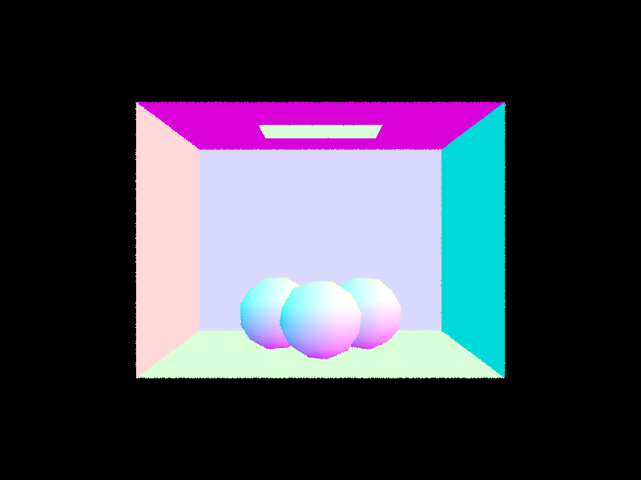 |

|
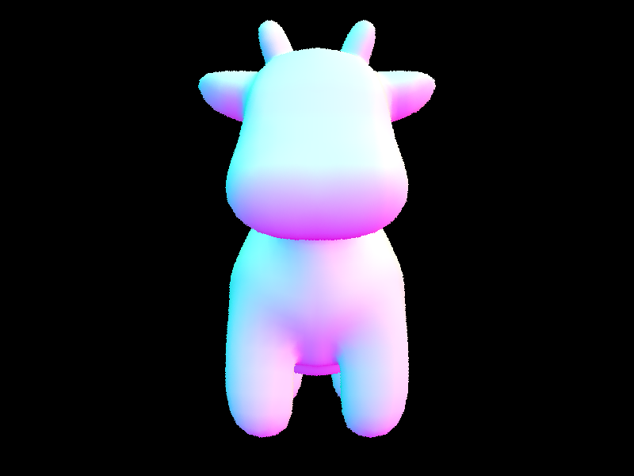 |
Part 2: Bounding Volume Hierarchy
A bounding volume hierarchy (BVH) is a binary tree of axis-aligned boxes, where each node's box encloses every primitive below it. A ray that misses a box skips all of those primitives, instead of being tested against every primitive in the scene.
BVHAccel::construct_bvh builds the tree recursively. It creates a node with the box around the given range of primitives. If the range has at most max_leaf_size primitives, the node is a leaf that stores the range. Otherwise, the range is split in two with std::partition, which reorders the primitives in place so that each subtree owns a contiguous section of one shared list, and each half is built recursively.
To split, we take the box around the centroids of the primitives' bounding boxes and choose its longest axis, along which the primitives are most spread out. Centroids keep a single large primitive from deciding the axis. The split point is the average centroid along that axis, which follows where the primitives are and tends to give halves of similar size. A primitive goes left if its centroid is below the split point and right otherwise. If all centroids fall on one side, one half would be empty and the recursion would never end, so we instead split at the median centroid with std::nth_element.
BBox::intersect treats the box as the overlap of three slabs, one per axis. For each axis, it computes the t values where the ray crosses the two planes, swapped if the ray points in the negative direction. The ray is inside the box from the latest entry to the earliest exit, and hits it if that interval overlaps the range from min_t to max_t. BVHAccel::intersect skips any node whose box the ray misses, tests the primitives at leaves, and visits both children of interior nodes, since the nearest hit can be in either. BVHAccel::has_intersection does the same but returns at the first hit.
With the BVH, each of the scenes below renders in under a tenth of a second.
|
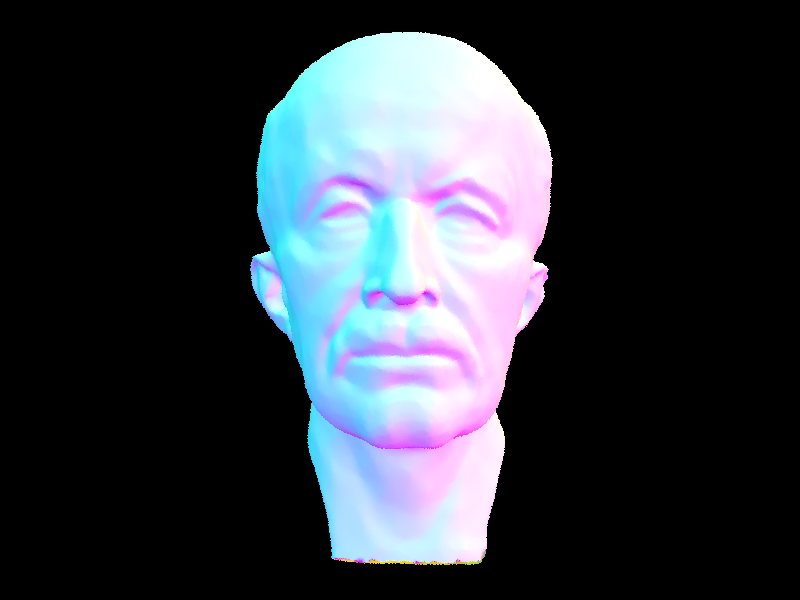 |
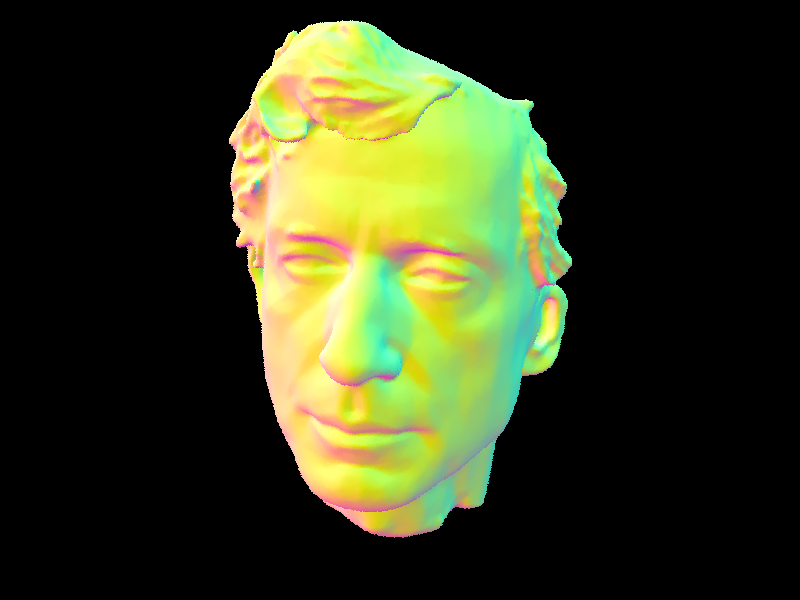 |
|
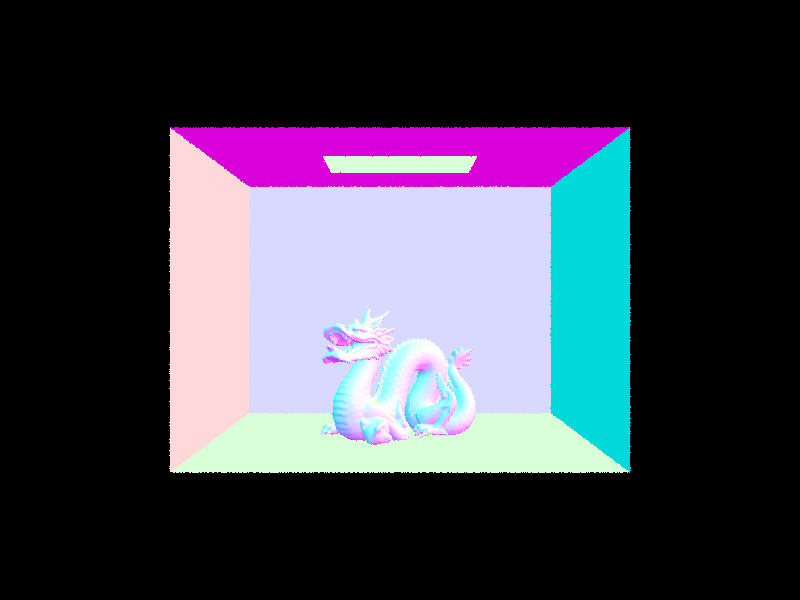 |
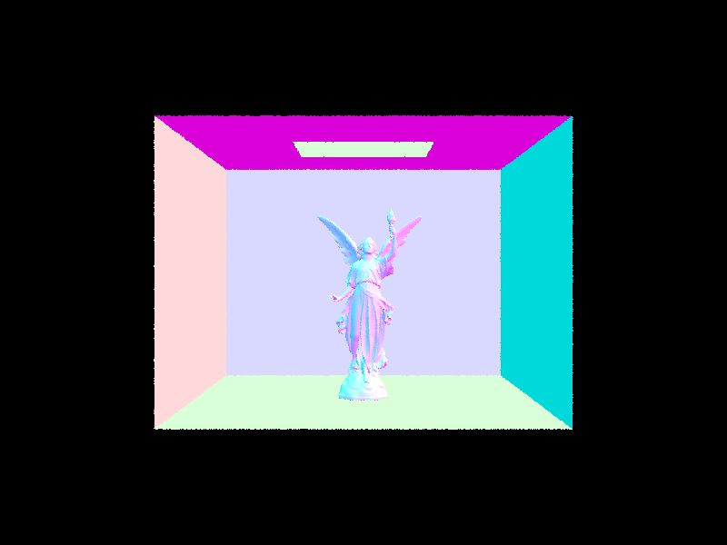 |
| Scene | Primitives | Without BVH (s) | With BVH (s) | Speedup |
|---|---|---|---|---|
| sky/CBspheres_lambertian.dae | 14 | 0.034 | 0.038 | 0.9× |
| sky/CBgems.dae | 252 | 0.321 | 0.033 | 9.7× |
| keenan/banana.dae | 2,458 | 2.791 | 0.024 | 115× |
| meshedit/teapot.dae | 2,464 | 2.542 | 0.030 | 84× |
| meshedit/cow.dae | 5,856 | 6.737 | 0.041 | 164× |
| meshedit/beetle.dae | 7,558 | 8.822 | 0.035 | 251× |
| sky/CBcoil.dae | 7,884 | 9.198 | 0.036 | 259× |
| sky/CBbunny.dae | 28,588 | 46.775 | 0.036 | 1,299× |
Without the BVH, rendering time grows linearly with the number of primitives, because every ray is tested against every primitive. With the BVH, every scene renders in about 0.02 to 0.04 seconds, and the speedup grows with scene size, from about 10 times for the gems to about 1,300 times for the bunny. This is because each ray is only tested against the primitives in the leaves it reaches. For the cow, tests per ray dropped from 5,856 to about 3. The 14-primitive spheres scene gets no speedup, because its render time is mostly fixed overhead. The same overhead is why render times with the BVH barely depend on the number of primitives.
Part 3: Direct Illumination
In Parts 1 and 2, we colored each pixel by the surface normal at the nearest hit. In this part, we replace this with physically based lighting, so each pixel shows the light that actually leaves the visible surface toward the camera. For now, we include two kinds of light. zero_bounce_radiance returns the light the surface emits, which is only nonzero for light sources. one_bounce_radiance estimates direct illumination, which is light that arrives straight from a light source and reflects once toward the camera. The pixel's value is the sum of the two, and light that bounces off other surfaces first is added in Part 4.
All surfaces here are diffuse, scattering light equally in every direction, so DiffuseBSDF::f returns the albedo divided by π. Since the cosine integrates to π over the hemisphere, this makes a surface reflect exactly its albedo.
Direct illumination is an integral over the hemisphere of the BSDF times the incoming light times the cosine of the angle from the normal. We estimate it with Monte Carlo integration by sampling directions, evaluating the integrand along each one, dividing by the probability of that direction, and averaging. Both methods work in a local frame where the normal is the z-axis, so the cosine is the direction's z component, and cast rays from the hit point with min_t set to a small epsilon so they do not hit the surface they start on.
estimate_direct_lighting_hemisphere samples directions uniformly, each with probability 1 / (2π). If the ray in a sampled direction hits a light, the sample contributes the BSDF times the light's emission times the cosine, multiplied by 2π; otherwise it contributes nothing.
estimate_direct_lighting_importance samples the lights instead. For each light, sample_L picks a point on it and returns the direction, distance, radiance, and probability of the sample. Point lights get one sample, since every sample is the same, and area lights get the number set by -l. We skip samples where the light is behind the surface and cast a shadow ray that stops just before the light. If nothing blocks it, the sample contributes the BSDF times the radiance times the cosine, divided by the probability. Each light's samples are averaged, and the lights are summed.
The images below use 64 samples per pixel and 32 per light.
|
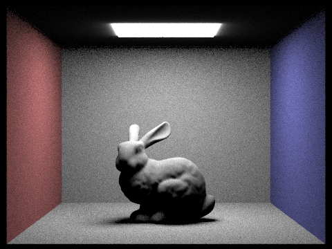 |
|
|
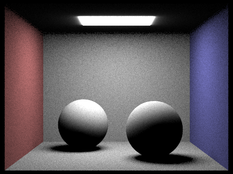 |
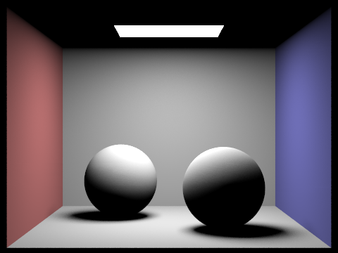 |
To compare noise in soft shadows, we rendered the bunny with light sampling at 1 sample per pixel and 1, 4, 16, and 64 light samples. With 1 light sample, each point either sees the sampled point on the light or does not, so the shadow is speckled black and lit. More light samples average over more of the light, so the shadow becomes a smooth gradient. Compared with the light-sampled bunny above, the error in the shadow was 89%, 44%, 24%, and 16% of its average brightness. Each fourfold increase roughly halves the error, as expected since Monte Carlo error falls with the square root of the sample count. The gain slows at 64, likely because the remaining error also includes noise from using 1 sample per pixel.
|
|
|
|
|
|
Light sampling is far less noisy than hemisphere sampling for the same number of samples. At 64 samples per pixel and 32 per light, the pixel noise on the back wall was 16% of its brightness with hemisphere sampling and under 1% with light sampling. The light covers a small part of the hemisphere, so most uniform samples miss it and contribute nothing, while the few that hit contribute a lot. Light sampling only chooses directions toward the light, so every unblocked sample contributes. It was also faster, 38 seconds instead of 54 for the bunny, likely because shadow rays can stop at the first object they hit. Finally, hemisphere sampling cannot render point lights, since a random direction never exactly reaches a point, while light sampling handles them with one sample, as in sky/dragon.dae.
Part 4: Global Illumination
For indirect lighting, the tracer starts at the camera ray's first surface hit. If the maximum ray depth is greater than zero, it calls at_least_one_bounce_radiance. At each hit along the path, the function aligns the coordinates with the surface normal and estimates direct light, then samples a direction from the BSDF and traces another ray. If that ray hits a surface, the function recurses with the ray depth reduced by one. It weights the returned radiance by the BSDF value and cosine term, divided by the sample PDF. Russian roulette may end the path early; surviving paths are weighted to keep the estimate unbiased.Global illumination renders
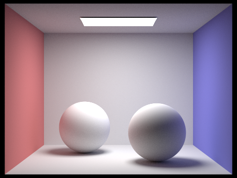
Direct and indirect illumination
The direct-only view shows the light source's illumination on surfaces visible to it, with dark cast shadows. In the indirect-only view, light has first bounced from another surface: the colored walls tint nearby surfaces, and bounced light fills parts of the shadows. The indirect image is noisier because it estimates this contribution by sampling paths.
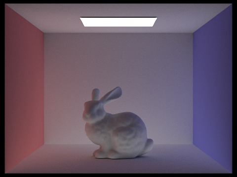
Individual bounce contributions
The second bounce adds light that has reflected once before reaching the visible surface. This causes color bleeding and softens shadowed regions. The third bounce adds more subtle interreflection and fill light. Later bounces generally contribute less energy, but together they produce more natural color and illumination than a direct-light-only rasterized view unless a rasterizer adds separate global-illumination approximations.
| m = 0 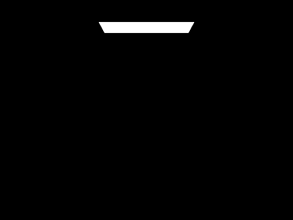 |
m = 1 | m = 2 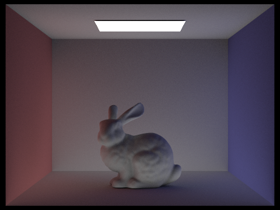 |
| m = 3 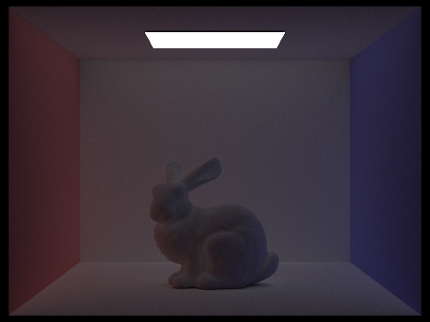 |
m = 4 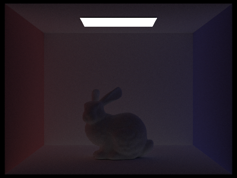 |
m = 5 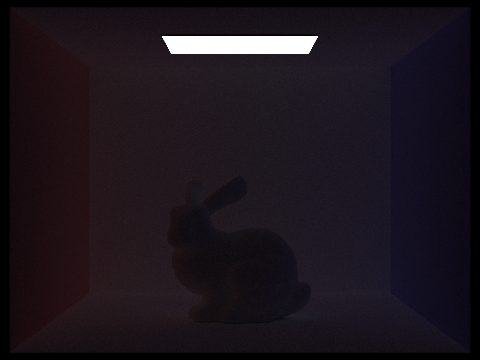 |
Accumulated versus unaccumulated bounces
Accumulated renders include contributions from every bounce up through m. Unaccumulated renders isolate the contribution at m. At m = 0 the result is only light emitted directly by the surfaces (in this case, the ceiling light); at m = 1 direct illumination appears. Higher isolated bounce images become dimmer and show indirect illumination, while the accumulated images progressively add those contributions to form the full global-illumination result.
| Depth | Accumulated | Unaccumulated |
|---|---|---|
| m = 0 | 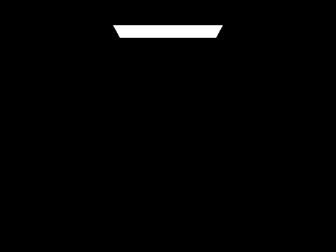 |
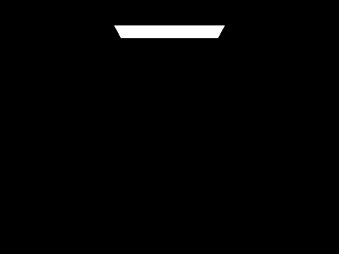 |
| m = 1 | ||
| m = 2 | ||
| m = 3 | 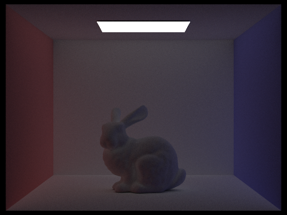 |
|
| m = 4 | ||
| m = 5 |
Russian roulette
These renders use Russian roulette with the listed maximum ray depths. Low depths truncate paths more often; at depth 100, roulette usually terminates paths before the depth limit while weighting surviving paths to keep the estimator unbiased.
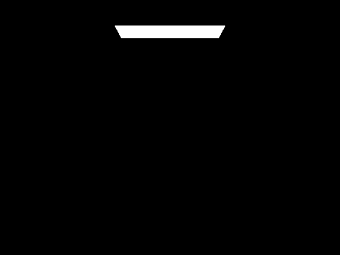
Samples per pixel
With four light rays, increasing the camera samples per pixel reduces Monte Carlo noise. At 1-8 samples, individual noisy pixels are prominent; at 16 and 64 samples, the image stabilizes; at 1024 samples, the result is much smoother.
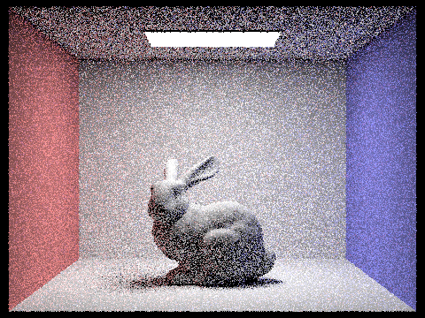
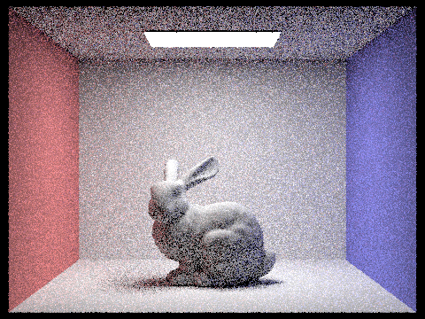
Part 5: Adaptive Sampling
Adaptive sampling stops tracing a pixel once its estimated noise is low enough. For each new ray sample, we added its
illuminance to s1 (the sum of the samples' illuminance values) and its squared illuminance to s2. After each batch of 32 samples, we
calculate the mean and sample variance, then compute the 95% confidence interval, I = 1.96 × σ / √n. If
I ≤ maxTolerance × mean, the pixel has converged and sampling stops. Otherwise, sampling continues up
to 2048 samples. The pixel color uses the average of its traced samples, and the sampling-rate image records the
sample count. Red indicates more samples; blue indicates fewer.
Both scenes were rendered with a maximum of 2048 samples per pixel, a batch size of 32, tolerance 0.05, one sample per light, and maximum ray depth 5.
CBbunny
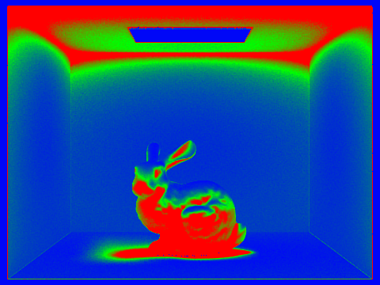
CBspheres_lambertian
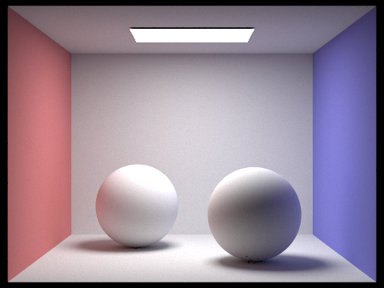
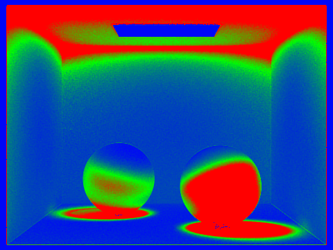
AI Acknowledgement
We acknowledge the use of AI to support conceptual understanding, debugging code, and refining parts of the write-up.